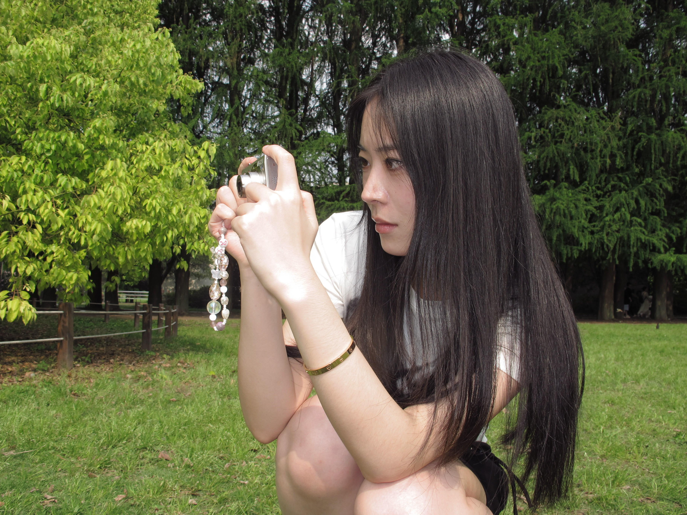

Hi, I’m Yuwang .
A multi-disciplinary designer who cares deeply about clarity , quality and collaboration.
I used to work as an interior designer before shifting to digital experience design.
My love for creativity drives me to solve complex problems and create meaningful, intuitive experiences.
I am currently a Master’s student in UX Design at SCAD, with a background in Architecture from Tongji University.
Fun facts about me:
I’m a twin 👯♀️ , I love cat memes and anything cute 🐱.
